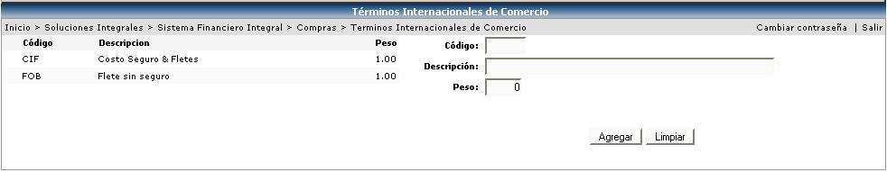

En esta opción se crearán los catálogos de los Términos Internacionales de Comercio que son aquellos términos en donde se especifica la forma en que se pacta la compra o abastecimiento de una orden de compra; estos catálogos son importantes y se asocian a la orden de compra solamente en aquellos casos en que se trate de órdenes de compra de importación (se adquieren fuera del país).
Cuando se esta realizando el proceso de compra por parte del comprador, él especifica que las cotizaciones que manden los proveedores sean con precio CIF, o sea que incluya en el monto total de la cotización los seguros y los fletes, o el precio FOB, que incluye los fletes pero sin seguros.
